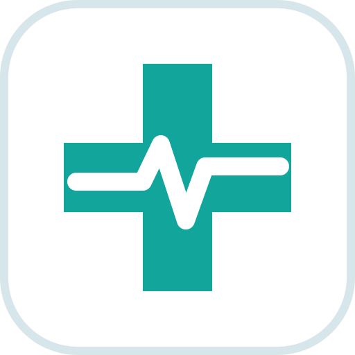
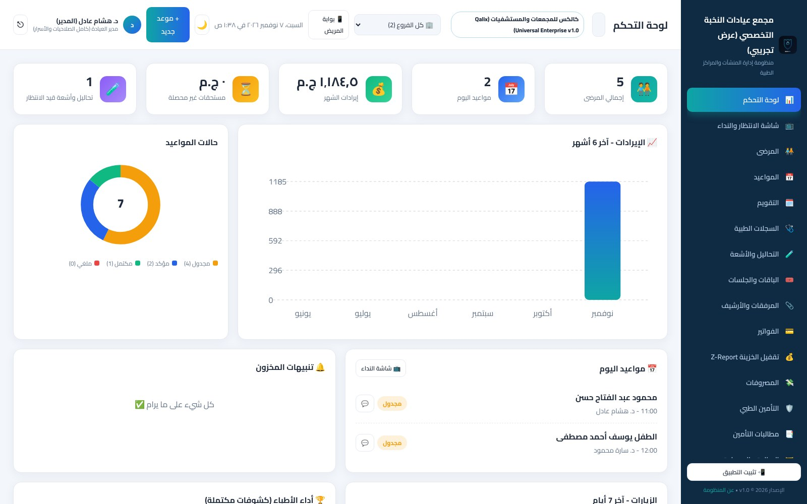
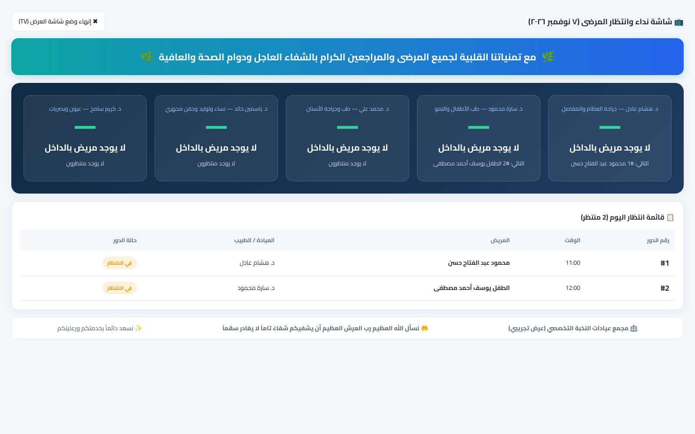
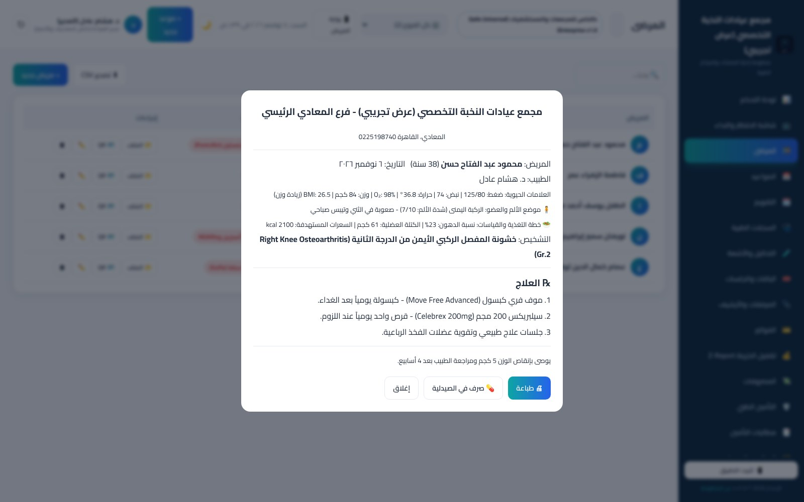
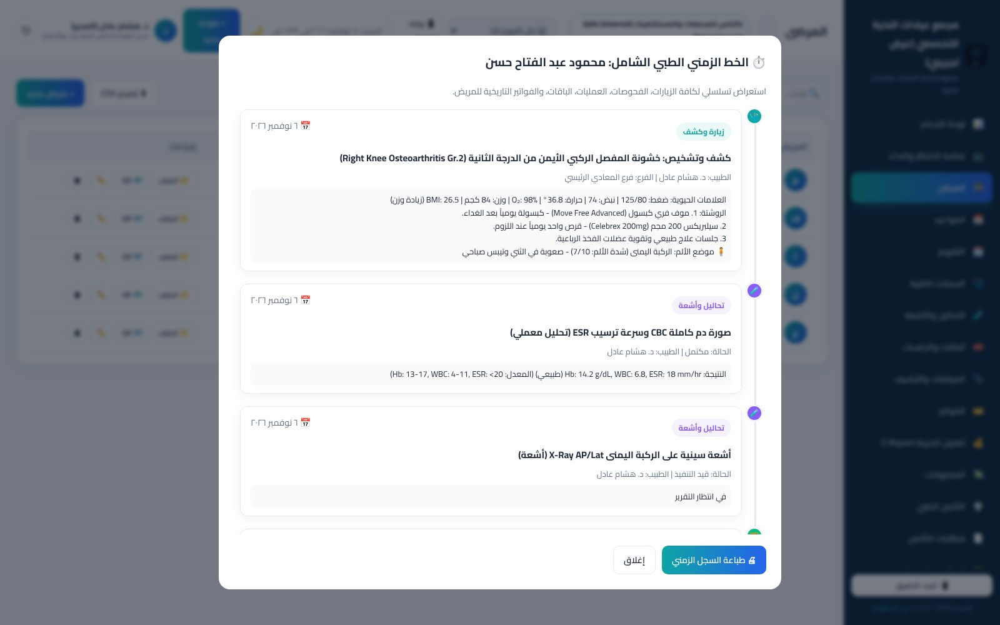
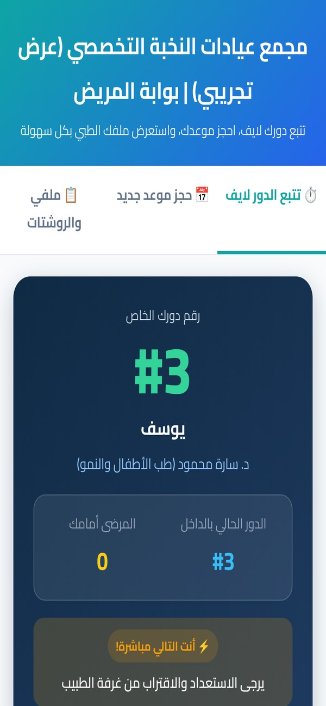
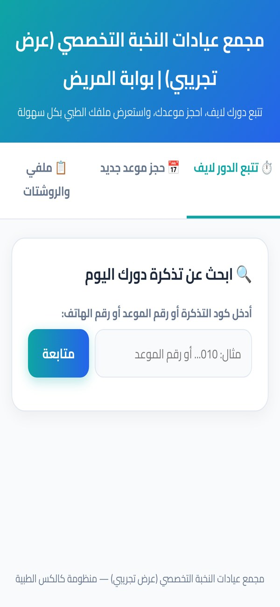
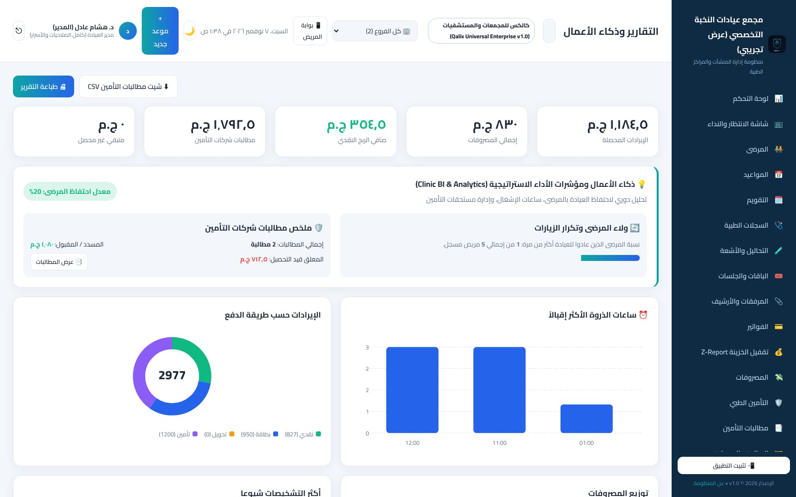
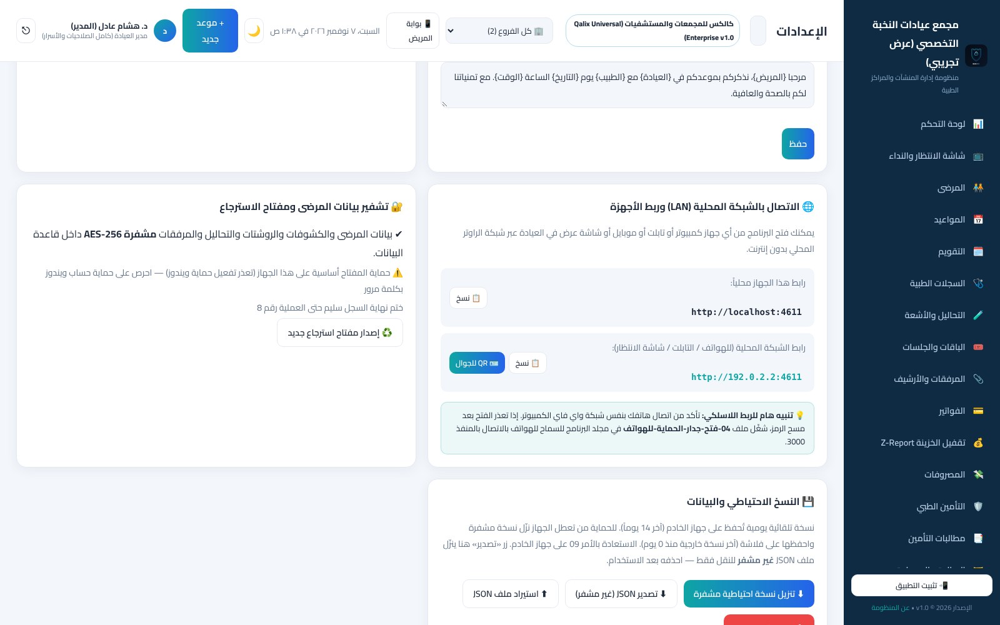

المواعيد وصالة الانتظار والملف الطبي والروشتة والفواتير والصيدلية والتقارير — في نظام واحد يعمل داخل العيادة، وبيانات مرضاك مشفرة ولا تغادر جهازك.

"دوري امتى؟" عشرات المرات يومياً، والسكرتارية تنادي بالصوت وتنسى الترتيب.
الطبيب لا يرى الزيارات السابقة والحساسية الدوائية في لحظة الكشف.
تتوقف مع انقطاع الإنترنت، وبيانات المرضى وأرباح العيادة على سيرفرات خارجية.
صعوبة معرفة إيراد اليوم الفعلي، وفروقات الدرج، ومستحقات التأمين المعلقة.






الخادم على كمبيوتر العيادة، والأجهزة تتصل عبر راوتر العيادة فقط. لا سحابة ولا تتبع.
أسماء المرضى والتشخيص والروشتات والمرفقات مشفرة داخل قاعدة البيانات، ومفتاحها مقفل على جهاز العيادة.
يُطبع عند التسليم ويحفظه الطبيب. لا يملك المطور نسخة منه، وبه تُفتح البيانات على جهاز جديد.
مدير، طبيب، استقبال، محاسب، تمريض، معمل، صيدلي — كل موظف يرى ما يخصه فقط.
كل عملية مختومة ببصمة رقمية؛ أي تعديل أو حذف لاحق في السجل يظهر فوراً.
نسخة مشفرة كل يوم تلقائياً، وتنزيل نسخة على فلاشة من المتصفح، واستعادة آمنة تحفظ البيانات الحالية.
| الأساسي Solo Lite | التخصصي ⭐ Specialty Pro | المؤسسات Enterprise | |
|---|---|---|---|
| الأطباء والمستخدمون | طبيب واحد · مستخدمان | طبيبان · 5 مستخدمين | بلا حدود |
| المواعيد، الملف الطبي، الروشتة، الفواتير، الصيدلية، التقارير | ✔ | ✔ | ✔ |
| السجلات التخصصية وتنبيه التداخلات الدوائية والتشفير | ✔ | ✔ | ✔ |
| شاشة صالة الانتظار والنداء الصوتي | — | ✔ | ✔ |
| بوابة المريض وتتبع الدور بالـ QR وتذكير واتساب | — | ✔ | ✔ |
| مطالبات التأمين، ذكاء الأعمال، الفروع المتعددة | — | — | ✔ |
| الدعم الفني المجاني | 3 أشهر | 12 شهراً | 12 شهراً |
| السعر | 4,500 ج.م | 8,500 ج.م | 18,500 ج.م |
نسخة كاملة تعمل 14 يوماً على جهاز عيادتك. ما تسجله أثناء التجربة يبقى بعد التفعيل.
تثبيت بدون إنترنت ولا برامج إضافية، وربط هواتف الاستقبال وشاشة الصالة بالراوتر.
تدريب الطبيب والسكرتارية على الحجز والكشف والفاتورة والنسخ الاحتياطي أثناء التسليم.
مفتاح ترخيص دائم موقّع، وعقد وشهادة ودليل مطبوع، ومفتاح الاسترجاع. والتحديثات لاحقاً على فلاشة موقّعة لا تلمس بياناتك.

بدون التزام. إذا قررت الشراء نفعّل الترخيص الدائم وتبقى كل بياناتك كما هي.